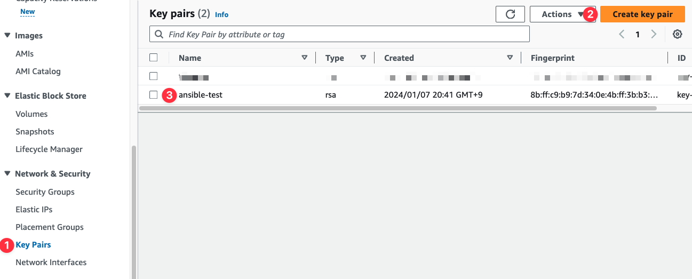
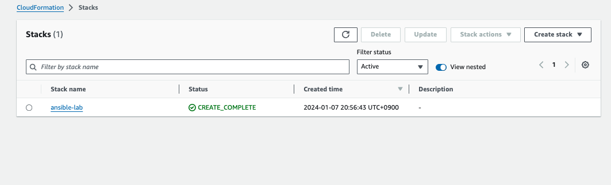

Aws
개요
- AWS EC2인스턴스를 사용하여 ansible 실습환경 구축
제약사항
- 핫스팟을 사용하는 환경은 EC2 인스턴스에 접속 못할 수 있습니다. IP가 고정이 아니기 떄문입니다.
준비
- AWS CLI
- Administrator권한을 갖는 AWS 계정 또는 IAM role
- 내 PC public IP 확인: EC2인스턴스에 접속하는 IP를 내PC로 제한하기 위해 IP를 확인
실습환경 구축
- AWS console에서 SSH키를 생성합니다.

- cloudformation 템플릿을 다운로드 받습니다.
- AWS CLI로 cloudformation 템플릿을 배포합니다.
EC2_SSHKEY="ansible-test"
aws cloudformation deploy \
--template-file a101-1w.yaml \
--stack-name ansible-lab \
--parameter-overrides KeyName=${EC2_SSHKEY} \
SgIngressSshCidr=$(curl -s ipinfo.io/ip)/32 \
--region ap-northeast-2
- cloudformation이 배포되면 아래처럼 stack이 생성됩니다.

- SSH키를 사용하여 EC2인스턴스 터미널에 접속합니다. EC2 인스턴스 public IP는 cloudformation output에서 확인할 수 있습니다.
# EC2인스턴스 public IP확인
EC2_PUBLIC_IP=$(aws cloudformation describe-stacks --stack-name ansible-lab --query 'Stacks[*].Outputs[0].OutputValue' --output text --region ap-northeast-2)
echo $EC2_PUBLIC_IP
# ssh 접속
ssh -i {ssh키 경로} ubuntu@$EC2_PUBLIC_IP